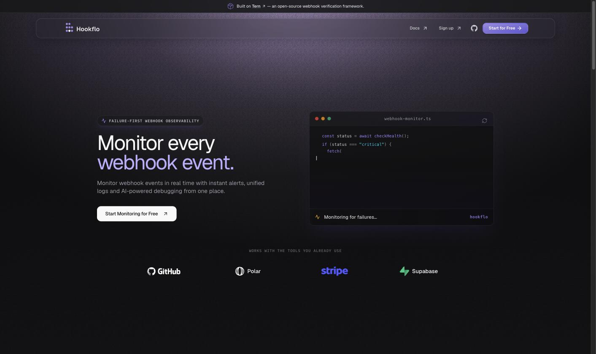
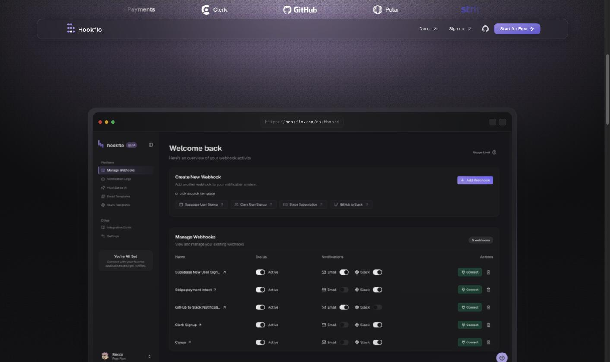
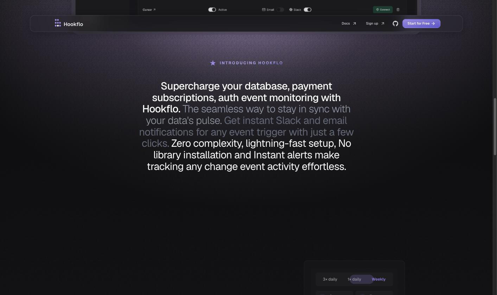
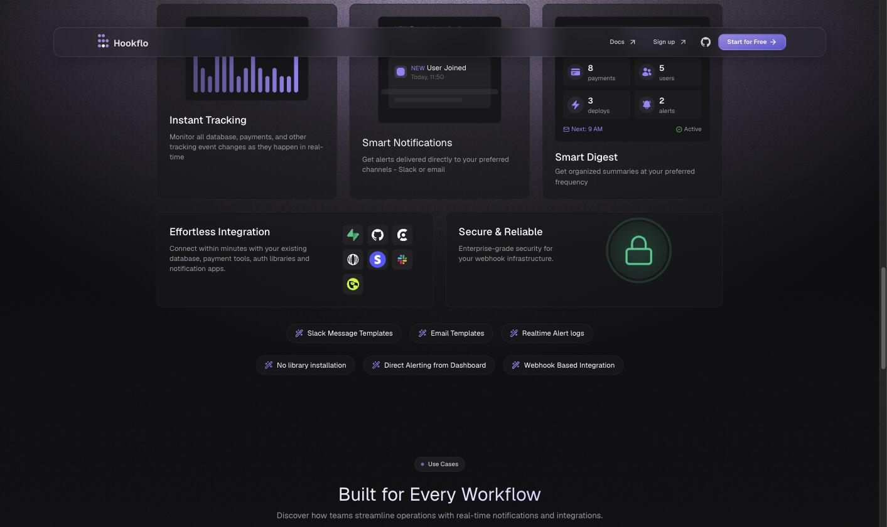
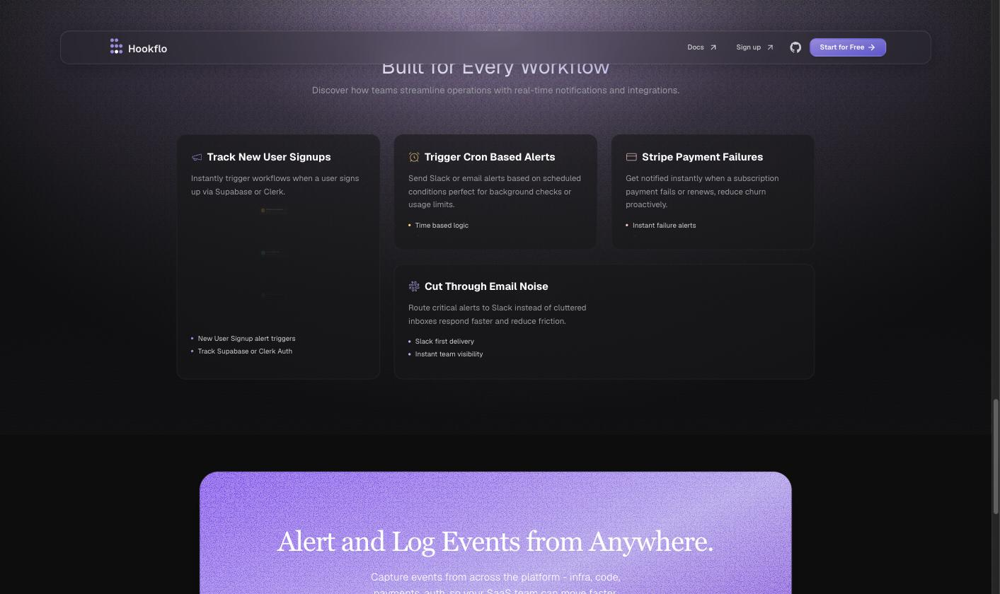
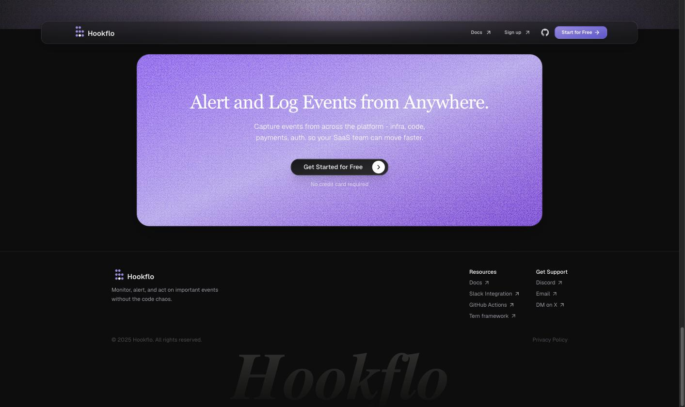

A read of hookflo.com before any motion was designed: eleven signature compositions, the design logic underneath them, nine rules extracted from that logic, and an explicit list of the ways this particular brand would be ruined. Screenshots are captures of the live site at 1730px; annotations are drawn over them.
A modern SaaS runs on other people's events: Stripe says a payment failed, Clerk says a user signed up, Supabase says a row changed, GitHub says an issue opened. Each arrives as an HTTP POST to an endpoint you wrote once and never look at. When one of them stops arriving — a rotated secret, a bad signature, a 500 on your side — nothing happens. No error surfaces anywhere a human is looking. You find out from a customer.
Hookflo is the endpoint you point those events at instead. It verifies the signature, logs the payload, and pushes an alert into Slack or email the moment a delivery fails — no library to install, no code to deploy. Its own eyebrow says it plainly: FAILURE-FIRST WEBHOOK OBSERVABILITY.
Small SaaS teams — one to ten engineers — already wired into Stripe, Clerk, Supabase, GitHub.
Webhook failures are invisible until a user complains.
A verified endpoint that logs every delivery and routes failures to a channel a human reads.
The event that doesn't arrive is the one that matters. Hookflo makes the absence visible.
Pulled straight from the nav SVG. Nine positions on a 3×3 grid; the top-right position is empty and the bottom-centre dot is white while the other seven are lavender. Everything else about this brand can be argued; this cannot. The logo is a field of deliveries in which one is missing and one is caught.
That is the entire product in eight circles, and it is the reason this film does not need a metaphor invented for it. The metaphor is already the logo — the work is to give it time.

Headline occupies the left column of a centred 1180px container — but note what it is beside: not a product screenshot, a terminal that is typing while you read, with a caret still blinking and a status strip at the bottom reading “Monitoring for failures…”. Both halves stop well short of the frame edge.
Distinctive because most SaaS heroes put a static dashboard on the right and let it bleed off-screen to imply scale. Hookflo does the opposite: the object is small, fully contained, and alive. Scale is not the promise. Vigilance is.
→ the frame never moves; the thing inside it does.
Geist 400 at 60px, tracking −0.045em, leading 0.94 — set so tight the two lines almost touch. Line one is white; line two, “webhook event.”, is #C4B5FD. Weight never changes. Hierarchy is size and colour only.
The full stop is doing real work: the sentence closes. This brand states rather than sells, and the type is set like a caption in a technical document that happens to be 60px tall.
→ lines rise inside their own boxes; the accent line arrives last and stays lit.

The dashboard sits in browser chrome — traffic lights, a real hookflo.com/dashboard
URL pill — and is lit by a single lavender bloom that originates above the top edge
of the section. There is no glow around the window itself, no rim light, no shadow spill.
One light source, always overhead, always centred, repeated at the top of every dark section. It reads like a screen in a dark room rather than like a rendered object, which is why the site feels nocturnal instead of futuristic.
→ light is a fixed fact of the world, not an animated effect.

36px light type, centred, in which each word starts at ~35% grey and is lifted to full white as the scroll position passes it. In the capture you can see the reading head mid-sentence: white behind, grey ahead.
This is the single most transferable idea on the site. Brightness is a hierarchy channel here, not a fade. Nothing appears or disappears — it is either being attended to or it is not. That is exactly how a log behaves.
→ a constant-speed scan head; everything it passes stays lit.

Three cards: fill #18181B at 60%, 1px #27272A hairline, 12px radius. Each holds a miniature working interface in its upper half — a bar chart, a notification row with a NEW badge and a timestamp, a digest counter grid — and its prose underneath.
The proportions are deliberate: the evidence is larger than the claim. Copy is visually secondary in every card, set in #9CA3AF at 15px against a 19px white title. The brand argues by showing state.
→ cards clip open in place on a metronome; they never float or fade up.
Seven capability pills, centred, wrapping onto two ragged lines — 4 then 3 — with a tiny lavender glyph in each. The rag is not corrected.
The only place the site is loose. It works because everything above and below is on a strict grid: an uncorrected rag reads as an index, not as sloppiness.
→ if used at all, they arrive as a set, not as seven staggered items.

Three equal cards on the first row, then a single double-width card offset to the right, leaving a deliberate void under the first column. Titles carry a small semantic icon; bullets are 3px dots in muted grey.
The void is the composition. Left as a full-width fourth card the section would read as a table; broken this way it reads as a set of examples that happens to have run out. Asymmetry only ever occurs inside a container here — never against the page.
→ negative space is placed, so nothing may drift into it later.
A vertical rail with dots along it: New Auth event · 2m ago,
GitHub issue opened · 10m ago,
User signed up · 10m ago. Source name under each.
Dot, label, relative time, source. Always that order.
This is the atom of the entire product, and the site repeats it at three different scales — feed rail, notification card, dashboard row. It is the one element a film can legitimately build a whole world out of.
→ rows arrive from below on a machine cadence; the newest is at the top.
Name · Status · Notifications · Actions. Every toggle is on. Every row is
Active. The green Connect
buttons are the only saturated colour in a 600px-tall composition, and they are ~70px wide.
Semantic colour exists but is rationed to chip scale. Green and red are never fields, gradients or glows — they are 8px dots and small tinted plates. That rationing is what keeps a near-black UI from reading as a gaming product.
→ a status change is a colour change on one small object. Nothing else moves.

A single #A692E5 panel with visible grain, a serif headline (the only serif on the site), and a black pill button with a circular arrow. Full width of the container, 20px radius, nothing bleeding.
Used exactly once. Because the entire site is a dark instrument, one bright panel at the end functions as a full stop — and the serif, appearing for the first and last time, signals that this line is being said in a different voice.
→ it may appear once and it must be last.
“Hookflo” set enormous in serif at roughly 6% opacity, cropped by the bottom of the document. The nav pill at the top, the giant name at the bottom.
The only element on the site allowed to leave the frame — and it leaves downward, quietly, at almost no contrast. Even the exception is polite.
→ if the film ends on the name, it ends dim and low, not big and bright.
Geist 400 everywhere; display at −0.045em / 0.94, muted body at −0.01em / 1.5, labels in mono uppercase at +0.18em. Radius 12px on cards and buttons, 20px on the slab, nothing rounder. One border colour. No blur, no glass, one gradient used twice. None of this is the brand. The brand is what the compositions above do with it.
Everything lives inside a hairline panel with a 12px radius, and every panel stops short of the frame edge. Nothing bleeds. The only exception is the footer wordmark, and it leaves downward at 6% opacity.
Product UI is a live instrument, not a screenshot: a caret blinks, a status strip reads, toggles are on, timestamps say 2m ago. The frame stays still; the interface inside it moves.
A single lavender bloom above the top edge of a section, centred. Never a glow around an object, never a side light, never two.
Lavender marks exactly one thing in any composition — the second headline line, or the active control, or the CTA. Never two at once.
Green means connected, red means failed, and both exist only at chip and dot scale. Never a field, never a gradient, never a glow.
One family, one weight. Levels are made by size and by grey value, and #9CA3AF is a full member of the hierarchy — not a de-emphasised leftover. Attention is modelled as illumination.
Uppercase mono at wide tracking, always sitting above the thing it names, never beside it. It is a channel marker, not a caption.
The page is a stack of centred max-width containers. Imbalance is allowed within one — hero split, double-width card, deliberate void — never against the page itself.
3×3, one position empty, one dot white. Any Hookflo geometry can be derived from that field, and returning to it is how a piece ends.
Not a general list of motion sins — these are the failure modes this particular site invites, because it is dark, purple, developer-facing and full of cards.